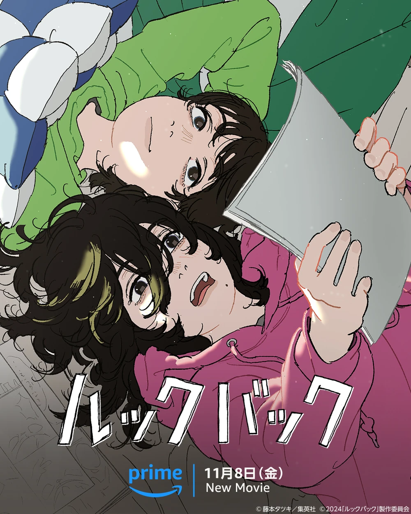

Qumara Rezky Fadilla
Nama panggilan: Kumar
Tempat, Tanggal Lahir: Sleman, 3 Agustus 2009
Sekolah: SMKN 10 Semarang
Jurusan: Rekayasa Perangkat Lunak
Nama panggilan: Kumar
Tempat, Tanggal Lahir: Sleman, 3 Agustus 2009
Sekolah: SMKN 10 Semarang
Jurusan: Rekayasa Perangkat Lunak

Look Back adalah film anime adaptasi manga Tatsuki Fujimoto yang mengisahkan tentang dua gadis, Ayumu Fujino dan Kyomoto, yang berbagi bakat dan ambisi yang sama dalam menggambar manga. Dimulai dari persaingan di sekolah dasar, keduanya kemudian menjadi sahabat dekat dan saling mendukung dalam perjalanan mereka sebagai mangaka. Namun, sebuah tragedi di kampus Kyomoto mengubah segalanya, memaksa Fujino untuk merenungkan makna kenangan, persahabatan, dan kehilangan.